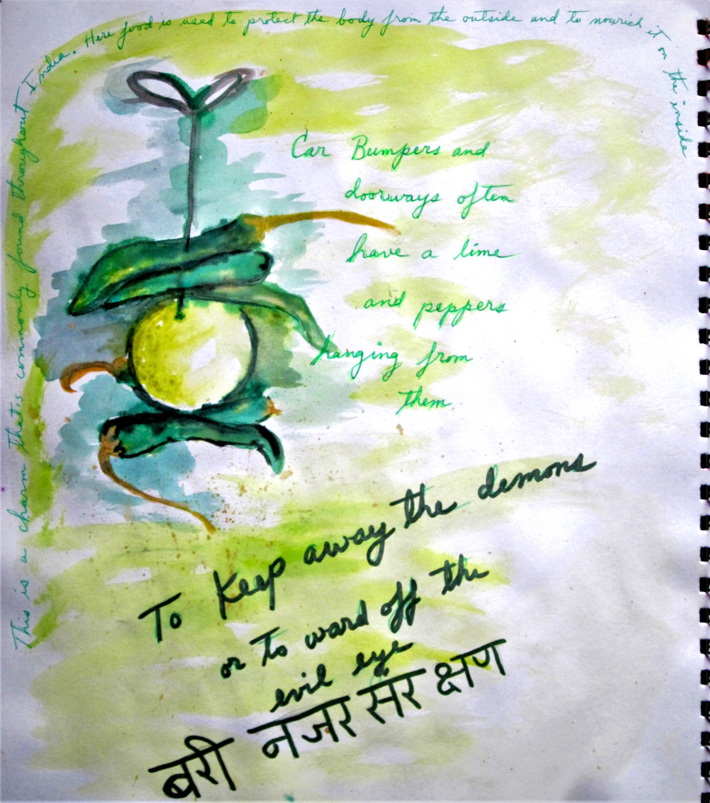
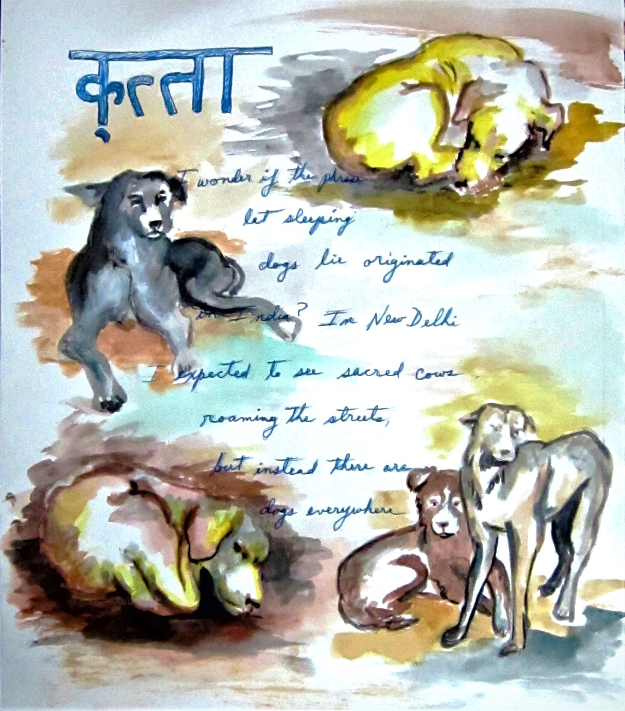
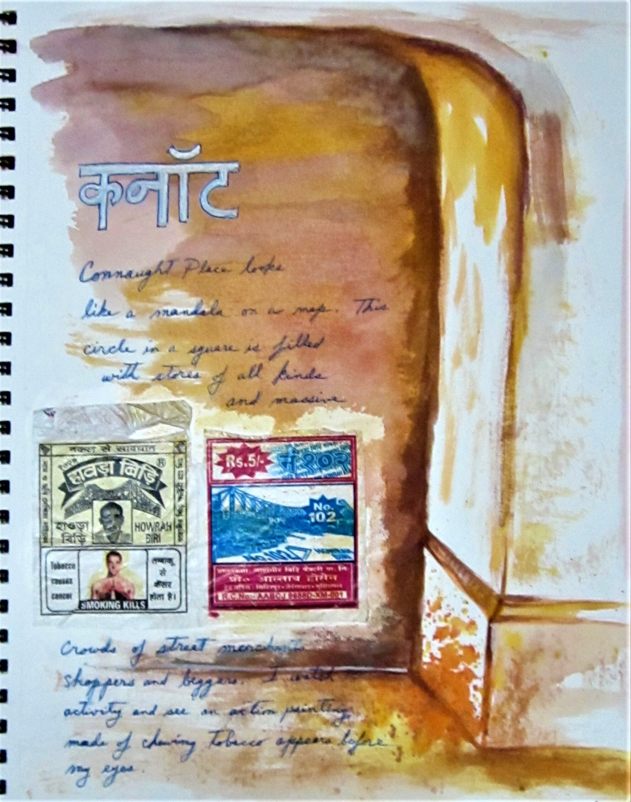

How India’s Lemon-Chili Charm Mirrors LatinX Superstitions
Nimbu Mirchi vs. Mal de Ojo: The Global Language of Protection. Hanging nimbu mirchi(lemon-chili) at doorways to ward off the evil eye isn’t just an Indian quirk—it’s a cosmic cousin to Latin America’s "mal de ojo" rituals. Both cultures use
pungent, eye-catching objects (limes, red peppers, even garlic) to deflect bad vibes. But while Indian shopkeepers refresh theirs weekly, Abuelitas might tuck a red bracelet on a baby. Same fear, different spices.
Why India’s Strays Are Both Revered and Feared
In Delhi, stray dogs nap like four-legged yogis under rickshaws—protected by some, shooed by others. Contrast this with Western shelters or Istanbul’s beloved street cats.

India’s duality? Bhairava’s sacred hounds vs. rabies fears. Yet in both places, strays force us to ask: Who deserves care in an urban jungle?
Betel Nut: India’s Chewing Gum (With a Cancer Warning)
From Wedding Blessings to Truck-Stop Energy Boosts. That red-stained sidewalk art? Betel nut spit—India’s answer to coffee breaks. Like Japan’s tea ceremonies or

America’s gas station energy drinks, it’s a social lubricant. But where matcha whispers Zen, paan shouts: "I’ll keep you awake (and maybe give you oral cancer)." Tradition meets modern health warnings.
Why We All Hang Charms, Feed Strays, or Chew Things We Shouldn’t
From nimbu mirchi to evil-eye beads, stray dogs to lucky cats, betel nuts to bubblegum—folkways reveal our shared human itch for control in a chaotic world. India just does it with more color, more contradictions, and way more street-side philosophy.
Next time you see a lemon hanging by a thread, remember: somewhere, someone’s Abuela is tying a red string for the same reason. The world’s quirks are more alike than we think— just spicier in some places.

Richard Diaz
Artistic meaning derives from subject (iconography), form (material/structure), and content (conceptual intent). These interdependent facets require critical engagement to decode implicit narratives beyond superficial observation.